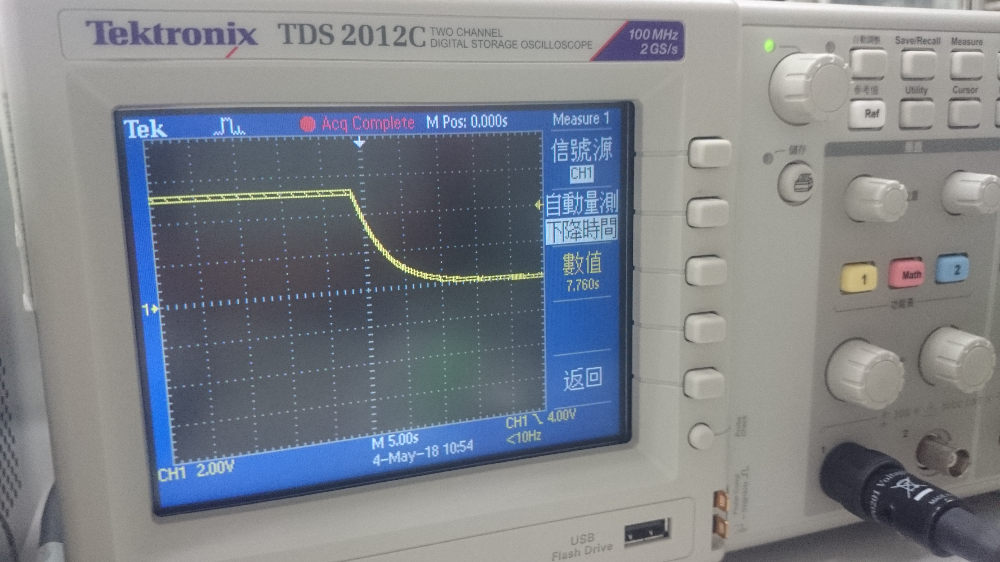

電容的放電與充電波形圖
實驗目的
- 藉由示波器觀看電容波形
實驗步驟
充電時（上升緣觸發）
- 先接好如圖的電路，並依照圖示接上示波器
- 打開示波器，並且先恢復原廠設定
- 將水平刻度調至5.00s，垂直刻度調至2.00V
- 按下「Acquire」(擷取) 按鈕，並且查看「擷取功能表」
- 按「峰值檢測」選項按鈕(螢幕右方第二顆按鍵)
- 按下「觸發功能表」按鈕
- 按下「斜率」 ► 「上升」(代表以 上升緣觸發)
- 旋轉「位準」旋鈕，將觸發位準調整為大約1V
- 此時，請確認電容陽極是接地，以利電容放電
- 按下「Single」(單一) 按鈕 會螢幕表頭先出現 Armed字樣
- 等到出現Ready字樣 即可以將電容陽極接5V 此時螢幕表頭會出現 Trig字樣
表示正在擷取中 要稍待片刻
- 最後，螢幕上即呈現我們要的圖
放電時（下降緣觸發）
- 先接好如圖的電路，並依照圖示接上示波器
- 打開示波器，並且先恢復原廠設定
- 將水平刻度調至5.00s，垂直刻度調至2.00V
- 按下「Acquire」(擷取) 按鈕，並且查看「擷取功能表」
- 按「峰值檢測」選項按鈕(螢幕右方第二顆按鍵)
- 按下「觸發功能表」按鈕
- 按下「斜率」 ► 「下降」(代表以 下降緣觸發)
- 旋轉「位準」旋鈕，將觸發位準調整為大約4V
- 此時，請確認電容陽極是接5V，以利電容充電
- 按下「Single」(單一) 按鈕 會螢幕表頭先出現 Armed字樣
- 等到出現Ready字樣 即可以將電容陽極接地 此時螢幕表頭會出現 Trig字樣
表示正在擷取中 要稍待片刻
- 最後，螢幕上即呈現我們要的圖

實驗心得
經由這個實驗，我們可以了解電容充放電的特性，以及學習如何操作示波器，擷取單一訊號
從實驗結果也可以應證：
電容能量的儲存
實驗總結
電容的特性
- 電容何時會充電？
電容是由兩塊金屬板構成，當接上電源時，會累積電荷在上頭，然而兩塊金屬板中間仍然有中間絕緣體存在
因此整個電容仍然為電中性
當兩塊金屬板所造成的電位差等於使用者給予它的電壓時，則電容會停止充電
- 放電呢？
把電容接上二極體時，就會發現燈泡瞬間發亮又熄滅，這就是它的放電效果！
由此次實驗，更可以明白整個充放電的時間以及平均電壓